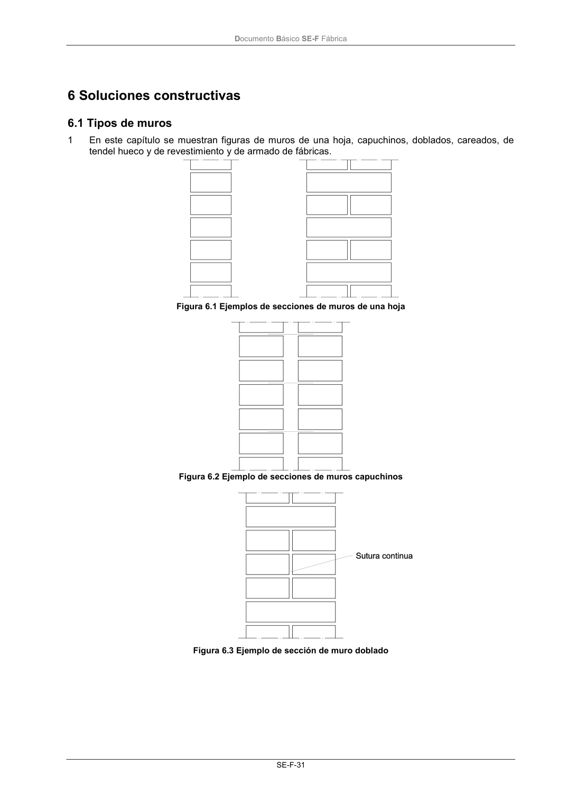
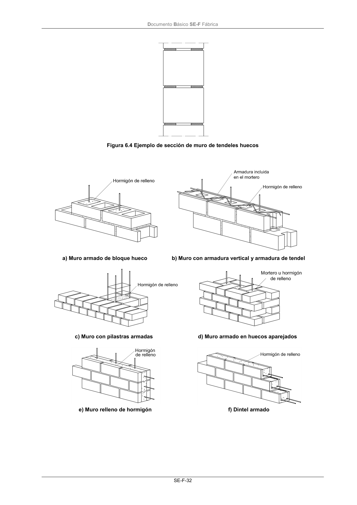
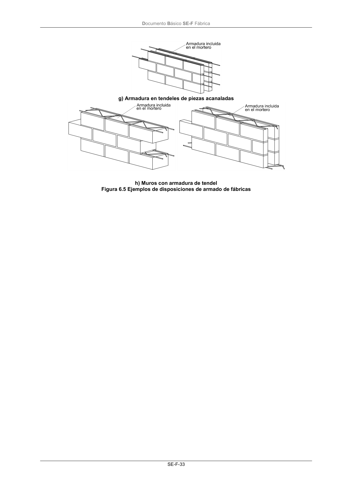

DB-SE-F · Fragmento de PDF p35 · versión 2019-12-20 · capa oficial
Formatos: JSON compacto · Markdown · PDF fuente
Ámbito del documento · texto del ámbito · documento y tablas
ID técnico a0073 · PDF pág. 35-39 · jerarquía no validada por persona · no es capítulo: sin_linea_de_encabezado · padre: raíz · literal original en el contenido: «6 Soluciones constructivas 6.1 Tipos de muros»
6 Soluciones constructivas 6.1 Tipos de muros 6.1 Tipos de muros 1 En este capítulo se muestran figuras de muros de una hoja, capuchinos, doblados, careados, de tendel hueco y de revestimiento y de armado de fábricas. Figura 6.1 Ejemplos de secciones de muros de una hoja Figura 6.2 Ejemplo de secciones de muros capuchinos Figura 6.3 Ejemplo de sección de muro doblado Documento Básico SE-F Fábrica SE-F-32 Figura 6.4 Ejemplo de sección de muro de tendeles huecos a) Muro armado de bloque hueco b) Muro con armadura vertical y armadura de tendel c) Muro con pilastras armadas d) Muro armado en huecos aparejados e) Muro relleno de hormigón f) Dintel armado Documento Básico SE-F Fábrica SE-F-33 g) Armadura en tendeles de piezas acanaladas h) Muros con armadura de tendel Figura 6.5 Ejemplos de disposiciones de armado de fábricas Documento Básico SE-F Fábrica SE-F-35



PDF fuente redistribuible: copia fiel enlazada en esta página (SHA256 verificado).